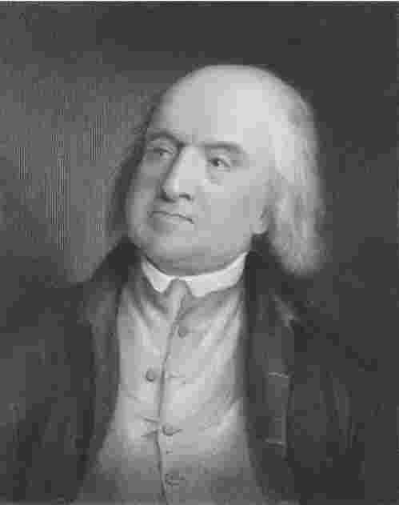
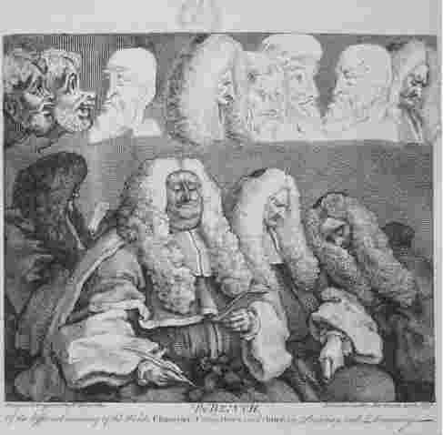
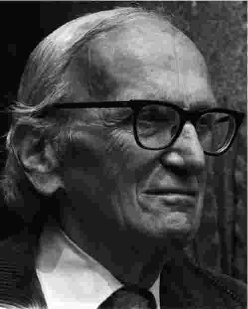
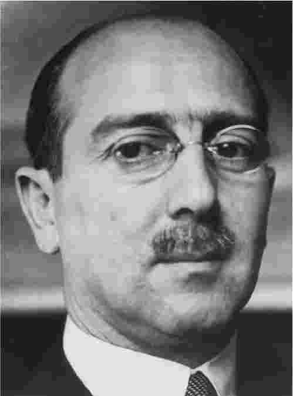

设想一下一个强有力的君主向其臣民颁布命令。臣民有义务按照君主的意愿去行事。法律即命令的观念是古典法律实证主义的核心思想，并得到该流派两位伟大的旗手杰里米·边沁和约翰·奥斯丁的支持。现代法律实证主义者对法律的概念这个问题采取了一种相对而言更为复杂深奥的态度，但和其卓越的前辈一样，他们也否认上一章所述的自然法学关于法律和道德之间存在关联的观点。自然法学家主张法律由一系列的命题组成，这些命题是通过一种推理的过程从自然中引出的。法律实证主义者对自然法学家的这个观点提出强烈反对。本章即对这一重要法律理论的主要内容进行阐述。
“实证主义”（positivism）一词源于拉丁文positum，意思是指制定或颁布的法律。一般而言，法律实证主义的核心观点是任何法律的有效性都要上溯至一个客观的可确证的渊源。简言之，如同科学实证主义，法律实证主义拒斥自然法学家所持的以下观点，即法律独立于人的立法行为而存在。通过本章的阅读我们将清楚地发现，边沁和奥斯丁的早期法律实证主义认为法律源自主权者的命令。H.L.A.哈特注意到一种承认规则，这种规则将法律与其他社会规则区分开来。汉斯·凯尔森则证明了一种使宪法有效的基本规范。法律实证主义者还经常声称把法律和道德联结起来毫无必要，对法律概念的分析则是值得研究下去的，并且这种分析与社会学和历史学的探究以及严格的价值评判是截然不同的（尽管并非是对立的）。
法律实证主义者之间最重要的共同观点是，出于研究与分析的目的，制定法应当与道德上应然的法律区分开来。换句话说，必须在“应当”（道德上可取的）与“是”（实际存在的）二者之间划分清楚。但由此并不能得出结论认为法律实证主义者对道德问题无动于衷。大多数实证主义者都批评现存的法律并且提出一些方法来对法律进行改革，这些通常都涉及道德判断。但实证主义者的确都认为，分析和理解法律的最有效方法是暂不进行道德判断，直到我们确定我们试图去弄清楚的是什么。
人们经常认为法律实证主义者持有这样一种主张：不正义或者邪恶的法律也是法律，因此必须得到服从。法律实证主义者并不必然认同这种主张。实际上，边沁和奥斯丁都承认不服从恶法是正当的，如果这种不服从能促进现状改善的话。用现代最重要的法律实证主义者H.L.A.哈特的话说：
对哈特和边沁来说，这是法律实证主义的一个主要优点。

图4 杰里米·边沁：法哲学中的路德？
杰里米·边沁（1748-1832）的巨著为实证主义法学以及对法律和法律制度进行的系统分析作出了卓越贡献。他不仅试图去揭露他那个年代的陈词滥调，构建一个建立在功利原则基础上的法学、逻辑学、政治学和心理学的综合理论，而且还尝试在几乎每个问题上对法律进行改革。他猛烈批评普通法及其理论基础。在启蒙精神的推动下，边沁试图让普通法服从理性的冷光。他努力剥去法律的神秘外衣并以他特有的犀利文风揭示法律的庐山真面目，声称诉诸自然法不过是“伪装的个人观点”或者“仅仅是自命为立法者的看法”。
边沁认为，普通法的不确定性是其特有的缺陷。不成文法在本质上含糊不清且难以预测，它无法提供一种可靠的公开标准，使人们对其拥有合理预期来指导行为。普通法的这种混乱情况必须系统地加以处理。在边沁看来，这很简单，就是要进行法典编纂。法典将有效削减法官的权力，法官的任务因此将更多地表现于执行法律而非解释法律。同时这也会减少对律师的需求：法典无须法律顾问的帮助也易于理解。不像大陆法系采用以罗马法为基础的拿破仑法典已有很长历史，在普通法世界进行法典编纂仍然是一个梦想。

图5 边沁认为英国的法官不公正、腐败，而且变化无常。
约翰·奥斯丁（1790-1859）在1832年边沁逝世那一年出版了其主要著作《法理学的范围》。作为边沁的弟子，奥斯丁的法律观建立在命令或责任的理念上，尽管他并没有过多详述什么是命令或责任。虽然这两位法理学家都强调人们对主权者权力的服从，但奥斯丁的法律定义强调对行为的控制，这个定义有时被认为对刑法以外的领域并没有太多涉足。他把命令等同于法律的标志导致其对法律的界定较之边沁所采纳的定义限制更多，边沁试图制定一种单一、完全的法律从而能充分表达立法机关的意志。
但二者都关注法学研究范围的限定，从而都能说明和解释法律的主要特征。然而，就奥斯丁而言，“确切意义上的法律”的涵盖面要比边沁的狭窄得多，只包含两类：神法和人法。人法（由人制定并适用于人的法律）进一步分为制定法或者“严格意义上”的法律（由政治地位高的人制定或者按照法定权利制定的法律）以及不是由政治地位高的人制定或者不是按照法定权利制定的法律。“非确切意义上的”法律则分为类推的法律（如时装规则、宪法和国际法）和比喻的法律（如万有引力定律）。类推的法律以及不是由政治地位高的人制定或者不是按照法定权利制定的法律仅仅是一种“实在道德”。只有制定法是法学的确切研究领域。
边沁是一个功利主义者（参见第四章）和法律改革家，这一点人们最为了解。但他始终坚持要把“说明性的”法学和“审查性的”法学区别开来。前者论述实然，后者则描述应然。奥斯丁无条件地保留了这个区分，但他的分析在范围和目的上都较边沁要狭窄得多。
尽管两人都坚持功利主义道德并在法学的性质、功能以及普通法传统的重大不足方面持有许多相似的观点，但他们在学科研究的一般方法上存在着几个重大区别。尤其是，边沁坚持一种单一完全的、能充分表达立法机关意志的法律观。他试图说明一个单一的法律如何生成一种单一的违法行为，这种违法行为的定义是法律承认的违法行为中含义最狭隘的一种。
奥斯丁则把其对法律体系的规划建立在权利的分类上；他不受寻求一种“完全的”法律的想法困扰。同样，在追求为一组涵盖广泛的法律和“立法艺术”的要素提供一种规划的过程中，边沁详述了一种复杂的“意志逻辑”，奥斯丁则试图构建一种法律科学，并没有花时间去研究边沁的立法艺术。边沁努力设计出一些方法，试图以此来对专断权力，尤其是法官的专断权力进行限制，奥斯丁则并不那么操心这些问题。
奥斯丁法学范围图景的一个特征是，法律的概念即主权者的命令。任何事物如果不是一个命令就不是法律。只有一般性的命令能算作法律，只有源自主权者的命令才是“制定法”。奥斯丁坚持主张法律即命令，这就要求其把习惯法、宪法和国际公法排除在法学范围之外，因为无法确定一个明确的主权者作为这些规则的创制者。因而，在涉及国际公法时，主权国家就恶名昭彰地随意漠视这类法律的要求。
然而，对边沁来说，命令仅仅是主权者制定法律的四种方法之一。他区分出命令或禁止某种行为的法律（强制性法律）和许可某种行为的法律（许可性法律）。他主张所有法律都既是刑法又是民法；即使在财产权方面也有刑事的因素。边沁试图表明，没有施加义务或制裁的法律（他称之为“民法”）不是“完全的法律”，而仅是法律的局部。另外，由于其主要目标是要创造一部法典，他主张刑法和民法两个分支法律应当分别制定。
命令与制裁的关系对奥斯丁而言也同样重要。实际上，他的那个命令概念本身就包含了一种可能性，即如果不遵守命令就会招致制裁。但何谓制裁？奥斯丁将制裁界定为一种损害、痛苦或者灾祸，施加制裁的条件是某个人未能按照主权者的愿望行事。必定存在某种现实可能性即任何人如果违反了命令就要受到制裁。只需存在一种最小的损害、痛苦或者灾祸的威胁 即可，但除非有一种制裁如影随形，否则单纯的愿望表达便不是一个命令。因而义务是根据制裁来界定的：这是奥斯丁命令理论的核心原则。制裁的可能性总是不确定的，但奥斯丁却由此得出一个不甚令人满意的观点，即制裁包含了“招致最小灾祸的最小可能”。
由一个主权者来颁布命令的思想贯穿边沁和奥斯丁二者的理论。值得注意的是二者都把主权者的权力视作由人们普遍遵从其法律的习惯所构成。但奥斯丁坚持主张主权的不可仿制和不可分割，边沁则因注意到联邦制度的存在而承认最高立法权可受到他所称的明示协定的限制与分割。
在奥斯丁看来，命令除了四个特征（愿望、制裁、愿望的表达以及一般性）外，还要加上第五个特征，即可确认的政治上级，或称主权者，这个上级的命令要得到政治下级的服从，而他不必服从任何人。奥斯丁对全能立法者的强调曲解了对立法机构立法权施加宪法限制的法律制度，也曲解了在中央联邦立法机构和州或省（如美国、加拿大或者澳大利亚）的法律制定机构之间进行分权的法律制度。边沁则承认对主权可以进行限制或划分，并且承认（尽管不情愿）对立法行为进行司法审查的可能性。
奥斯丁关于“确切意义上的法律”应限于主权者的命令的观点使他把主权观建立在社会成员采取的服从态度之上。并且，主权者必须是确定的（例如主权机构的组成必须明确），因为“没有任何模糊不清的主权者能发出明示或默示的命令，或得到人们的顺从或臣服”。这导致奥斯丁引人瞩目地拒绝承认国际公法、习惯法和许多宪法为“法律”。
此外，由于强调制裁是法律概念不可或缺的要素，奥斯丁就只得按照制裁来界定义务：如果主权者表达了一种愿望并有权施加灾祸（或制裁），个人就有义务按照那种愿望去行事。“愿望”与“愿望的表达”的区别类似于议案与法律的区别。
奥斯丁把义务与制裁联系起来的做法受到很多人的批评，尽管他可能只是在试图表明——在一种正式意义上：只要存在义务，对义务的违反都会导致制裁。换句话说，他并不一定是在试图解释法律为什么得到服从或者法律是否应当得到服从，而是试图解释法定义务什么时候存在。不过，他无疑赋予了义务概念一种无根无据的重要性。法律经常并不是施加直接义务，如法律在促成结婚、缔约与立下遗嘱时。我们没有义务做这些事，但很明显他们是法律的一部分。H.L.A.哈特称他们为“授权”规则（见下文）。
边沁的研究方法则没有奥斯丁那么武断。他承认主权者的命令即使在缺乏奥斯丁意义上的制裁时也同样构成法律。按照边沁的看法，法律既包括惩罚（“抑制性目的”）也包括奖赏（“诱惑性目的”），但它们无法说明什么是法律、什么不是法律。
边沁和奥斯丁为现代法律实证主义打下了基础，但他们的观点已经在相当程度上为当代法律实证主义者所提炼、发展甚至扬弃。本章的剩余部分将概述当代法律实证主义者中三位主要领头人物的理论路径：H.L.A.哈特、汉斯·凯尔森以及约瑟夫·拉兹。
H.L.A.哈特（1907-1992）通过将分析哲学，尤其是语言哲学的方法适用到法学研究中来而详细勾勒出现代法律理论的范围，并因此受到赞誉。哈特的研究工作阐明了法律概念的涵义、我们使用这些法律概念的方法以及我们思考法律和法律制度的方式。比如说，享有一种“权利”是什么意思？何谓法人或者义务？哈特声称除非我们理解法律形成、发展的概念背景，否则我们就无法确切理解法律。例如，他主张语言有一种“开放式结构”：语词（规则由此也是）有许多清晰的含义，但总是存在一些“模糊不清”的情况，此时这个词是否适用并不确定。哈特的著作《法律的概念》于1961年出版，该书是一本法律理论的杰作，对世界上许多法理学家的研究起到了促进作用。
哈特的实证主义与边沁和奥斯丁关于法律很大程度上体现了一种强制性的描述大相径庭。哈特将法律理解为一种社会现象，它只能通过对一个社群的实际社会实践进行描述来予以理解。哈特认为，一个社群要存续下去，就需要有某种基本规则，他称之为“最低限度的自然法”。这些基本规则产生于人类的境况，这种境况体现了如下本质特征：

图6 H.L.A.哈特：现代法律实证主义之父。
“人类的易受攻击性”：我们每个人都容易受到身体攻击。
“近似平等”：即使最强者有时也必定要休息。
“有限利他主义”：我们一般情况下都是自私的。
“有限资源”：我们需要衣、食、居，而这些资源是有限的。
“有限的理解与意志力”：不能指望我们与同伴合作。
人类的这些弱点要求制定规则以保护人身与财产，同时确保承诺得到遵守。但尽管哈特使用了“自然法”这个通常的说法，他却并不是指法律源于道德或者在这二者之间存在必然的概念上的关联。他也不是说这个最低限度的自然法能确保一个公平正义的社会。哈特的法律实证主义既摆脱了功利主义（见第四章），也摆脱了边沁、奥斯丁支持的法律命令说的束缚。就后者而言，哈特对其加以拒斥的原因是认为法律不仅仅是持枪歹徒的命令：由制裁所支持的命令。
哈特理论的核心是认为存在着官方承认的基本规则来规定立法程序。其中最重要的基本规则被哈特称为承认规则，该规则是一个法律体系中最基本的宪法规则，被执法者视为详细规定着判定一个规则是否确实是一个规则的有效性条件或标准。
哈特把法律分解成一种规则体系。他的论证如下：所有社会都有社会规则；这些规则包括与道德、比赛等相关的规则，也包括施加义务或责任的义务规则；后者可分为道德规则和法定规则（或法律）。由于上面指出的我们人类的若干局限，义务规则在所有社会都是必要的。法定规则可分成主要规则和次要规则。前者禁止使用暴力、实施偷窃和欺诈，虽然人们很想去做这些事情，但如果他们要在比邻状态下共存则必须抑制自己不做这些事情。原始社会的规则通常就局限于这些施加义务的主要规则。随着社会日渐复杂，很明显就需要改变主要规则，裁判违规行为，并确认哪些规则真正属于义务规则。现代社会满足这三种要求的途径是分别引进三类次要规则：变革规则、裁判规则和承认规则。与主要规则不同，前两种次要规则一般情况下并不施加义务，而是赋予权力。然而，承认规则似乎确实施加了义务（主要针对法官）。我将在下文对这一点进行详述。
法律体系的存在要求对两个条件必须加以满足。首先，有效的义务规则必须得到社会成员的普遍遵守；其次，官员必须认可变革规则、裁判规则，并且要“从内心”认可承认规则。
正如已经指出的那样，哈特否认奥斯丁的规则即命令的概念，也否认一种观念，即认为规则是仅存在于可观察的外部行为或习惯中的现象。相反，哈特让我们考虑规则的社会维度，即社会成员感知相关规则的方式，他们对规则的态度。这个“内心的”视角把规则和纯粹的习惯区别开来。
因而，用哈特的例子来说，下象棋的人除了有相似的习惯以同样的方式去移动王后外，对这种移动棋子的方式也有一种“批判的反思态度”：他们每个人都将此看做是所有下象棋的人奉行的标准 。他们在评价其他棋手的时候表明这些观点，并在自己受到批判的时候承认这种批判的正当性。
换句话说，为把握规则的本质，我们必须从体验 规则或评判规则的人的视角来对其进行审查。哈特还运用“规则”的概念来区分“被强迫”与“有义务”。当持枪歹徒问你“要钱还是要命？”时，你的服从是被迫 的，但哈特说，你没有义务 去服从——并没有规则对你施加义务。
在论述了主要规则的性质和目的后，哈特试图表明每个法律体系都包含三种次要规则。第一种他称为变革规则。这类规则推动对主要规则和某些次要规则（如下文的裁判规则）的立法和司法变革。这种变革的程序由次要规则调整，这些次要规则授予权力给个人或团体（如国会或议会）以按照某种程序来立法。变革规则还授予你我权力来改变我们的法律地位（如通过立下契约、遗嘱等）。
其次是裁判规则，它赋予个人（如法官）对违反主要规则的情况进行判断的权威。这种权力通常还与惩罚作恶者或者强迫作恶者为恶行付出代价的一种后续权力结合在一起。
第三是承认规则，它被用来确立判别一个法律体系中的所有规则是否具有法律效力的标准。如上所述，与其他两类次要规则不同，承认规则在某种程度上似乎是施加了一定的义务：它要求行使公共权力的人（尤其是法官）遵循某种规则。哈特主张，仅当规则满足由承认规则所设定的标准时，它才成为法律体系中有效的一部分。哈特用巴黎的标准公尺棒（过去一公尺的权威标准）作比喻，认为承认规则的效力是毋庸置疑的。它既非有效也非无效，而是被公认为正确的标准。
按照哈特的说法，法律体系只有在有效的主要规则得到服从且政府官员认可变革规则与裁判规则时才得以存在。用哈特的话来说：
作为社会的普通成员，你我无须认可主要规则或者承认规则；仅仅是政府官员 需要从“内心的角度”来这样做。这是什么意思呢？哈特的回答如下：
规则的这种“内心”维度因而就把社会规则同纯粹的团体习惯区分开来。认可次要规则时，政府官员无须赞成它们。在一个不公正的法律体系中，法官会厌恶要求他们去适用的规则，但当他们认可这些规则时，就满足了哈特所说的法律体系存在的条件。
哈特承认，如果一个法律体系不能获得普遍的赞成，则它在道义和政治上都将遭到反对。但这些道义和政治标准并不被看成是“法律体系”这一概念的识别特征。一个法律体系的效力由此便独立于其实效。一个完全没有效率的规则也可以是一个有效的规则——只要它是源自承认规则。但作为一个有效的规则，这个规则所隶属的法律体系整体上肯定是有效率的。
汉斯·凯尔森（1881-1973）在他复杂的“纯粹法理论”中就我们应如何理解法律详述了一种深奥而意义深远的观点。他强调，我们的做法应当是将法律理解成一种“应然”体系或者规范 体系。凯尔森的确承认法律也包含由这些规范决定的法律行为，但法律的本质特征来自规范——包括司法裁决和法律业务（如合同和遗嘱）。甚至最一般的规范也描述人的行为。
受18世纪伟大哲学家伊曼努尔·康德的影响，凯尔森承认我们只有运用实际上不“存在”的某种形式范畴（如时间和空间）才能理解客观现实：我们通过应用这些范畴来理解世界。同样地，我们要理解“法律”也需要借助形式范畴，比如基本规范——或者根本准则（Grundnorm），这个基本规范正如其名称所指的那样，是所有法律制度的基础（参见下文）。凯尔森认为，与物理学或化学相比，法律理论也同样是一门科学。因此，我们需要去掉道德、心理学、社会学以及政治理论等杂质对法律的影响。凯尔森因而提出一种伦理净化的建议，有了这种净化我们的分析将直接导向制定法规范：“应当”（oughts）这一规范宣告，如果实施某种行为（X），则公职人员就会对违法者施加某种制裁（Y）。凯尔森的“纯粹”理论由此便排除了那些我们无法客观知悉的东西，包括法律的道德、社会或者政治功能。法律只有一个用途：对暴力的垄断。
凯尔森的规范概念蕴涵了某事应当如何或者应当发生的前提——尤其是个人应当以某种特定方式行事。因此，“应当把门关上”这句陈述和红色交通信号灯二者都构成规范。但是，要成为有效的规范，一个规范还必须得到另一个规范的授权，后者相应地也必须得到法律体系中更高的法律规范的授权。凯尔森属极端的相对主义：他驳斥规范中存在着价值这种观点。在他看来，所有规范对相关的个人或团体而言都是相对的。
政府通过制定规范确定我们的行为是否合法来实现对社会秩序的促进。凯尔森认为，如果未能遵守这些规范，人们就会受到制裁，而制裁也是这些规范所规定的。因此，法律规范不同于其他规范之处就在于前者规定了制裁。法律制度建立在国家强制力的基础之上；法律规范的背后是暴力威胁。这就把收税员同抢劫犯区分开来。二者都要你的钱，换句话说，二者都要求你应当 全部付清。二者都表现出一种意志的主观 行为，但只有收税员的行为是客观 有效的。何故？凯尔森说道，因为人们并未把抢劫犯强制命令的主观意图解释为其客观意图。为何不这样解释呢？因为并没有预设任何基本规范，根据这样的规范人们应当遵守这种命令。为什么没有呢？因为抢劫犯的强制命令缺乏“持久效力，没有这种效力就不能预设任何基本规范”。这就表明了在凯尔森的理论中有效性与效力之间的基本关系，这一点将在下文予以探讨。

图7 汉斯·凯尔森试图把伦理因素从法律理论中清除出去。
因此，凯尔森的法律制度模式是一连串相互连接的规范，这些规范从最一般的“应当”（如应当按照宪法规定来实施制裁）推进到最特别的或最“具体的”应当（如查尔斯负有契约义务为卡米拉割草）。在这种等级制度中每个规范都从另一个更高的规范那里获得其有效性。所有规范的有效性最终都建立在基本规范之上。
由于所有规范的有效性都依赖于一个更高的规范，这个更高规范的有效性又相应地依赖于另一个更高的规范，我们最终就达到了一个不能再往前追溯的临界点。这就是基本规范，或者说根本准则。所有规范都源自这个基本规范并且在“具体性”程度上逐步增强，一国的宪法本身亦然。从定义来看，基本规范的有效性不可能依赖于其他任何规范，人们因而只能对基本规范进行预设。凯尔森主张，缺少这种预设，我们就无法理解法律秩序。基本规范虽然存在，但只存在于“法学家的意识”中。它是一种假定，使法学家、法官或者律师对法律体系的理解成为可能。然而，对基本规范的选择并不是任意的，而是要顾及作为一个整体的法律秩序是否“在大体上”是有效的。其有效性取决于其效力。换言之，基本规范的有效性并不依赖其他的规范或者法律规则，而只是一种假定 ——为了纯粹性这一目的。因此它是一种假设，一种完全形式化的构造。
凯尔森用一个宗教上的比拟来阐明基本规范的性质，在这个例子中，父亲教导儿子去上学。对这一个体性规范，儿子答道，“为什么我应当去上学？”换句话说，他在问为什么他父亲的意志行为的主观意图就是其客观意图，即对他有约束力的规范——或者同样的意思：这个规范的有效性基础是什么？父亲回答说，“因为上帝命令儿女们服从父母”——也就是说，上帝授权父母可以对孩子们发出命令。儿子反驳道，“为什么人们要服从上帝的命令？”用凯尔森的话来说，儿子是在问为什么上帝意志行为的主观意图也是其客观意图，即一条有效的规范；或者说，这条一般规范的有效性基础是什么？对这个问题唯一可能的答案是：对于一个信徒而言，人们预设了任何人都应当服从上帝的命令。在信徒的思想中，为了给宗教道德规范的有效性提供依据，就必须预设一条规范的有效性，上面的例子就是论述了这一点。这条预设的规范就构成一种宗教道德的基本规范，该规范是这种道德所包含的一切规范之有效性的根据——一种“基本的”规范，因为不能对其有效性的根据再提出质疑。这种陈述不是一种实证规范，即不是由意志的实际行为所设定的规范，而是在信徒的思想中预设的。
基本规范的设定旨在拥有两种主要功用。首先，它帮我们区分强盗的要求和法律的要求。换句话说，基本规范使我们能把一条强制性命令看作是客观有效的。其次，它解释了一条法律命令的一致性和统一性。所有有效的法律规范都可被解释成意图不矛盾的主题。
凯尔森对基本规范的表述如下：
作为一种纯粹的形式构造，基本规范并没有详细明确的内容。凯尔森认为，任何人类行为都可以成为法律规范的主题。不能仅仅因为其规范的内容而否定一条明确的法律命令的有效性。
由于凯尔森主张整个法律秩序的效力是其内部每条规范之有效性的一个必要条件，一个法律体系的存在因此就暗含了这样一个事实：其法律通常得到遵守。在《纯粹法理论》一书中，凯尔森直接谈到这个问题：“每一条大体上得到实施的强制性命令都可被解释成一条客观上有效的规范性命令。”但这里有一个问题。我们如何知道法律是否实际上得到遵守或者被漠视？用凯尔森的话来说，我们如何检验法律是否“大体上”具有效力？许多人会说法律命令有无效力是一个有赖经验判断的问题，是我们可以见证或观察的。然而，纯粹法理论却不屑于这种“社会学”调查。
凯尔森也回避考虑法律为何具有效力的原因（其合理性、优良性等）。如果法律命令的有效性要求其基本规范具有效力，则必然导致的结果是当法律体系的基本规范不再得到普遍支持时，法律就不存在了。这便是当一场革命成功后所发生的事情。凯尔森认为，现有的基本规范不再存在下去，并且一旦革命政府的新法得到有效执行，法学家就将预设一个新的基本规范。这是因为基本规范不是宪法，而是一种推定，即变化了的情势应当在事实上得到承认。
凯尔森的观点被一些国家的法院所援引，这些国家都经历过革命，其中包括巴基斯坦、乌干达、罗得西亚 [1] 和格林纳达。
对牛津哲学家约瑟夫·拉兹（1939——）的著述不适合作简单地勾勒。作为一个“强硬派”或者“排他主义者”领军人物的法律实证主义者，拉兹主张法律体系的特征和存在可通过诉诸三个要素来检验：实效、制度特性和渊源。基于这样一种观点，即合法性不依赖于道德价值，法律被抽去了道德内容。如H.L.A.哈特这样的“温和”法律实证主义者则否认这种观点，并承认道德内容或价值可以作为有效性的一个条件被包括或结合进来。因此他们也被称为“结合主义者”。
然而，拉兹主张，法律是独立自主的：我们无须求助于道德即可确定其内容。法律论证则并非独立自主的，它是司法论证的一个必然和可取的特征。对拉兹来说，每部法律的存在和内容都可由对习俗、制度和法律体系参与者之意图的事实探究来确定。“什么是法律？”这个问题的答案永远是一个事实而不是一种道德判断。这就将拉兹归入了“强硬”或者“排他”的法律实证主义者之列。之所以“排他”，是因为我们将法律视为有权威的原因在于这样一个事实：法律能以道德所不能的方式去指引我们的行为。换言之，法律维护着其自身所具有的一种优于所有其他行为准则的首要地位。法律是权威最终的源泉。因而，法律体系是有权威的规则中最精华的部分。正是这种对权威的主张成为法律体系的标志。
拉兹辨别出由法律实证主义者所坚持、受到自然法学家抨击的三项主要主张：
“社会命题”：法律可被识别为一种社会事实，与道德考量无涉。
“道德命题”：法律的道德价值既非绝对也非固有，而是视“法律的内容和法律所适用的社会环境”而定。
“语义命题”：规范性术语如“权利”和“义务”在道德和法律背景中的使用是不一样的。
拉兹只承认“社会命题”，其基础是确认法律体系的三个公认标准：其实效、其制度特性及其渊源。道德问题并不包含在这三个标准之中。这样，法律的制度特征便只是意味着根据法律和某些制度（例如立法机构）的关系来识别法律。任何事物——不管其在道德上是否被接受——只要不被这样的制度承认就不是法律，反之亦然。
拉兹实际上假定了一种更彻底的“社会命题”（“渊源命题”）来作为法律实证主义的本质。他证成渊源命题的主要理由是它解释了法律的一个主要功能：以某种方式来设定约束我们的标准，在这种方式下，我们不能以质疑该标准的理论基础作为不予遵守的托辞。
正是主要基于对社会命题的承认以及对道德命题和语义命题的否认，拉兹找到了理由来反对有一种服从法律的一般道德义务存在。为达到这个结论，拉兹批判了三种支持法律的道德权威的论证。首先，经常有人认为，要想如实证主义者所做的那样区分法律和其他的社会控制形式，就要忽略法律的功能；并且，由于对功能的描述不可能以一种不带价值偏好的方式来进行，对法律功能的任何论述都必定包含道德判断——从而违反社会命题。拉兹认为，虽然法律确实包含某种功能，但他自己对法律功能的分析却是价值中立的。
其次，拉兹也不承认法律的内容不能由社会事实单独确定：例如，由于法庭不可避免地要依靠明显的道德考量，他们由此便在不知不觉地确定法律实际上是什么。尽管拉兹承认对道德的关注确实成为裁决的一部分，但他坚持认为这对任何一种建立在某种渊源基础上的体系来说都是不可避免的。在拉兹看来，这并没有确立反对渊源命题的个例。最后，人们有时会认为法律的特别之处在于其遵从法治理想，即没有人能逾越法律，有人由此确信这表明法律的确是道德的。拉兹试图驳斥这一主张，他认为，遵从法治减少了行政权力的滥用，但并没有赋予法律一种独立的道德价值。对拉兹来说，法治是一种消极的德行——权力擅断的风险正是由法律本身造成的。因而拉兹的结论是，即使在一个公平正义的法律体系中，也不存在服从法律的初步义务。